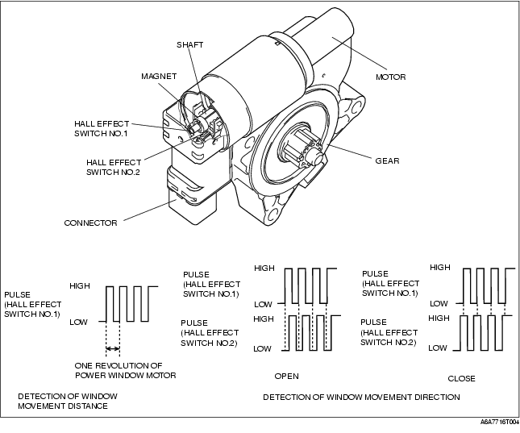

POWER WINDOW MOTOR CONSTRUCTION
id091200006900
• The power window motor consists of a motor, connector and gear.
• Two Hall effect switches are set in the connector.
• The Hall effect switch utilizes magnets set on a rotating axis to sense the power window motor rotation, and outputs a synchronized pulse to the power window main switch.
• Hall effect switch No. 1 outputs one pulse cycle for each rotation of the power window motor axle. Accordingly, the power window main switch detects the rotational speed of the power window motor.
• The power window main switch detects the rotational direction of the power window motor by the difference between high and low pulse points from each Hall effect switch No. 1 and 2.
